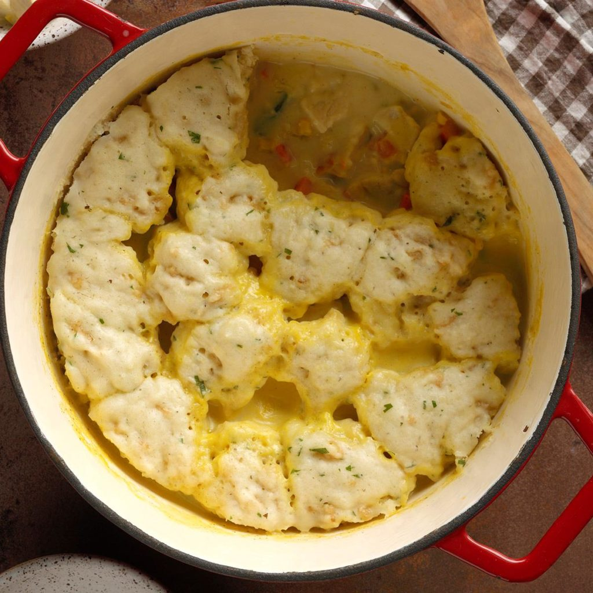

Quicker Chicken and Dumplings
Ingredients
1-1/2 cups 2% milk
1-1/2 cups frozen mixed vegetables, thawed
2-1/2 cups cubed cooked chicken
1 can (10-3/4 ounces) condensed cream of chicken soup, undiluted
1/2 teaspoon garlic powder
1/4 teaspoon poultry seasoning
1 cup biscuit/baking mix
1/3 cup French-fried onions, coarsely chopped
7 tablespoons 2% milk
1 tablespoon chopped fresh parsley
Directions
- In a Dutch oven, combine the first 6 ingredients; bring to a boil, stirring occasionally.
- Meanwhile, in a small bowl, combine the biscuit mix, onions, milk and parsley just until moistened. Drop by heaping teaspoonfuls onto simmering stew. Cook, uncovered, for 10 minutes.
- Cover and simmer 10-12 minutes longer or until a toothpick inserted in a dumpling comes out clean (do not lift the cover while simmering).
Nutrition Facts
1 cup: 330 calories, 13g fat (4g saturated fat), 62mg cholesterol, 746mg sodium, 28g carbohydrate (6g sugars, 3g fiber), 24g protein.
Total Time
Prep/Total Time: 30 min.